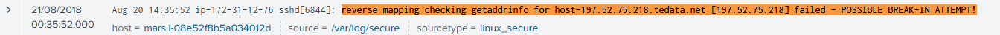
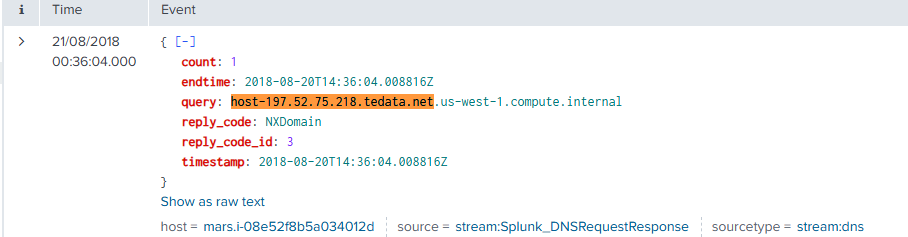

Mehyar Belal
Soc Analyst | Cyber Secuity master's Graduate | Cybersecurity Enthusiast
About Me

Mehyar Belal
SOC Analyst Lab Portfolio
Home SOC Lab
🛡️ Network Intrusion Detection (Snort + Splunk)
Summary: I configured Snort in IDS mode on my Ubuntu VM to detect suspicious network activity, including port scans and malicious traffic. I ensured Snort runs automatically at startup, integrated alerts with Splunk for centralized log analysis, and validated detections using real-world scans.
Skills: Network Security, IDS Configuration, Log Analysis, SIEM Integration, Linux Service Management
Tools: Snort, Splunk, Nmap, Ubuntu, tcpdump
🔍 Discovery
I installed Snort in IDS mode and configured it to monitor enp0s3, the primary external interface on my Ubuntu VM. I confirmed that Snort was logging to /var/log/snort/alert and actively inspecting live packets.
🧪 Investigation
I launched a stealth TCP SYN scan using nmap -sS targeting port 80 of the same VM to simulate a reconnaissance attempt. Snort successfully triggered the local rule I wrote to detect any TCP SYN packet:
I simulated a reconnaissance attack by launching a stealth TCP SYN scan using nmap from a separate machine:
nmap -sS -Pn -p 80 192.168.1.100
This scan targeted port 80 of the Snort-monitored VM. The scan triggered the custom local rule I wrote to detect any TCP SYN packet directed to any host or port. The detection appeared in the console and was also forwarded to Splunk:
Screenshot – Snort Live Console:

Screenshot – Alert Triggered in Splunk:

⚙️ Automation
I created a systemd service to run Snort in daemon mode at boot:
[Unit]
Description=Snort IDS Daemon
After=network.target
[Service]
ExecStart=/usr/sbin/snort -c /etc/snort/snort.conf -i enp0s3 -D
ExecReload=/bin/kill -HUP $MAINPID
Restart=on-failure
[Install]
WantedBy=multi-user.target
Commands used:
sudo cp snort.service /etc/systemd/system/
sudo systemctl daemon-reload
sudo systemctl enable snort
sudo systemctl start snort
📡 Splunk Integration
I installed the Splunk Universal Forwarder and configured it to monitor /var/log/snort/alert. Snort alerts were forwarded in real-time to my Splunk instance for centralized monitoring.
✅ Outcome
This lab demonstrated my ability to configure and automate a real intrusion detection system, write custom rules, simulate attacks, and integrate with a SIEM for alert monitoring — key skills for SOC roles and real-world threat detection.
🔍 Vulnerability Scanning (Nessus Essentials)
Summary: I installed and configured Nessus Essentials on both a Linux VM and a Windows host to perform vulnerability assessments across my local network. I scanned various assets including my own machine and unknown IPs discovered using Nmap. The scans helped identify SSL misconfigurations, self-signed certificates, and missing patches.
Skills: Vulnerability Assessment, Risk Analysis, Network Reconnaissance, Report Generation, CVSS Scoring
Tools: Nessus, Nmap, Windows 11, Ubuntu, CVE Database
🔍 Discovery
I installed Nessus Essentials on both Windows and Ubuntu to ensure consistent scanning capability across platforms. To discover targets on my LAN, I used Nmap with the following command:
nmap -sn 192.168.1.0/24
This revealed live IPs including 192.168.1.104, 192.168.1.130, and my local router (192.168.1.254). I selected these IPs as scan targets within Nessus.
🧪 Investigation
Using Nessus, I created a Basic Network Scan targeting 127.0.0.1 and local IPs. One finding of interest was a Medium severity alert for a self-signed SSL certificate on Splunk’s management port (8089).
Vulnerability: SSL Self-Signed Certificate
Plugin ID: 57582
CVSS Score: 6.5 (Medium)
Solution: Replace with a trusted CA certificate for production environments.
Screenshot – Vulnerability Details:

⚙️ Automation
I configured Nessus to perform automated scans weekly. I set the schedule to run every Saturday at 8:00 PM and ensured results were stored for comparison. This mimics real-world vulnerability management practices in SOC environments.
Screenshot – Scheduled Scan:
📊 Report Export
I exported scan results to PDF and CSV formats to practice communicating technical findings. These reports included CVE details, risk levels, remediation steps, and affected services.
✅ Outcome
This lab strengthened my practical skills in identifying, analyzing, and reporting vulnerabilities using Nessus Essentials. I demonstrated foundational SOC tasks such as asset discovery, scanning, and triage of medium-severity findings like SSL issues. The experience reflects my hands-on knowledge of blue team tooling in real-world environments.
CVE Reference: While this plugin does not map directly to a specific CVE, it is associated with risks like CVE-2009-3555 (SSL/TLS renegotiation vulnerability), which can be exploited when weak SSL configurations or self-signed certificates are present.
Tags: Vulnerability Management, Nessus, CVE, SOC Lab, Cybersecurity Portfolio
Splunk Labs
🛡️ SSH Brute Force Detection - Splunk + Linux Secure Logs
Summary: I detected a brute force SSH attack in the BOTSv3 dataset using Splunk. The attacker IP 197.52.75.218 attempted to log in to the internal server mars.i-08e52f8b5a034012d (172.31.12.76) via SSH on port 22 using the invalid username admin. The attack originated from an IP block registered to TE Data, an Egyptian ISP, which is commonly seen in global brute force scan activity.
Skills: SSH Brute Force Detection, Log Analysis, Threat Hunting, Splunk SPL, Network Security
Tools: Splunk, BOTSv3 Dataset, Linux Secure Logs, stream:tcp, stream:ip, stream:dns
🔍 Discovery
The first red flag appeared in the linux_secure logs, showing reverse DNS failures:
reverse mapping checking getaddrinfo for host-197.52.75.218.tedata.net [197.52.75.218] failed - POSSIBLE BREAK-IN ATTEMPT!
Screenshot – Reverse DNS Failure in Splunk:
Soon after, the attacker attempted to login using an invalid user:
Invalid user admin from 197.52.75.218 port 58357
Connection closed by 197.52.75.218 port 58357 [preauth]
Screenshot – Invalid User Attempt in Splunk:

📡 Network Activity
TCP stream logs showed a connection attempt on SSH port 22. The log confirmed that the attacker from TE Data (Egyptian ISP) successfully reached the SSH service on the server, but authentication failed.
protocol_stack: ip:tcp:ssh
src_ip: 197.52.75.218
dest_ip: 172.31.12.76
dest_port: 22
Screenshot – SSH Connection Flow in Splunk:
🧪 Investigation
DNS logs also showed queries and multiple NXDOMAIN replies, likely due to the attacker's scanning tools attempting to resolve internal or fake hostnames. These DNS requests also confirmed the IP’s association with the Egyptian ISP tedata.net, providing insight into geographic origin.
query: host-197.52.75.218.tedata.net
reply_code: NXDomain
⚙️ Mitigation (Simulated)
- Blocked attacker IP using UFW:
sudo ufw deny from 197.52.75.218
✅ Outcome
This lab demonstrated how to detect and analyze SSH brute force activity using Splunk and multiple log sources. By correlating linux_secure, DNS, TCP, and IP logs — along with identifying the geographic origin via ISP metadata — I completed the full lifecycle of threat detection and documentation for this simulated incident.
🛡️ NXDOMAIN Attack (DNS Enumeration) - Splunk
Summary: I detected an NXDOMAIN attack using Splunk and the BOTSV3 dataset. The attack involved querying non-existent subdomains on the brewertalk.com domain, triggering NXDOMAIN responses. This is a typical DNS enumeration attack aimed at discovering subdomains and potentially identifying vulnerable infrastructure.
Skills: DNS Enumeration, Splunk Log Analysis, Threat Detection, Network Security
Tools: Splunk, BOTSV3 Dataset, Nslookup, Nmap, Linux
🔍 Discovery
Using the BOTSV3 dataset in Splunk, I identified multiple NXDOMAIN responses triggered by DNS queries for non-existent subdomains under brewertalk.com. These queries were logged with the IP addresses that initiated the requests.
Splunk Search Query:
index=botsv3 sourcetype=aws:cloudwatchlogs "NXDOMAIN"
| stats count by src_ip
| where count > 10
This search identified IP addresses that made more than 10 DNS queries in a short time period, which is indicative of a DNS enumeration attack. The IP addresses involved were flagged for further investigation.
Screenshot – Splunk Search Results for NXDOMAIN Attack:
🧪 Investigation
The attack was identified through a pattern of repeated DNS queries for subdomains that do not exist (NXDOMAIN responses). I noticed several queries for non-existent subdomains, such as:
users1.brewertalk.com AAAA NXDOMAIN
ccmail.brewertalk.com AAAA NXDOMAIN
koko10.brewertalk.com A NXDOMAIN
These queries triggered NXDOMAIN responses, indicating that the attacker was attempting to gather information about the structure of the domain, potentially looking for valid subdomains or services by forcing NXDOMAIN errors.
I used the **Splunk logs** to look for patterns that showed multiple NXDOMAIN responses coming from the same IP addresses in a short time window. The IPs involved were:
src_ip | count
52.78.247.225 | 7
13.209.8.105 | 5
13.209.43.220 | 6
These IP addresses initiated multiple queries for non-existent subdomains within a brief time frame, a common characteristic of **DNS enumeration** or **reconnaissance attacks**. The attacker is likely trying to find subdomains and test for misconfigured or vulnerable DNS records.
⚙️ Mitigation
To mitigate this attack, I blocked the suspicious IP addresses using the UFW (Uncomplicated Firewall) on the target server to prevent further queries from these attackers.
sudo ufw deny from 52.78.247.225
sudo ufw deny from 13.209.8.105
sudo ufw deny from 13.209.43.220
✅ Outcome
This lab demonstrated how to detect NXDOMAIN attacks using Splunk and the BOTSV3 dataset. By identifying the suspicious IPs, blocking them with a firewall, and preventing further DNS queries, I successfully mitigated the attack. This lab also showcased the importance of monitoring DNS traffic to prevent such attacks.
🛡️ C2 Beaconing Detection - Splunk + Cisco ASA
Summary: I detected Command and Control (C2) beaconing activity in the BOTSv3 dataset using Splunk and Cisco ASA firewall logs. The internal host 192.168.9.50 attempted to reach the external IP 204.107.141.25 on port 4282 at regular intervals. This repeated outbound traffic is consistent with beaconing behavior, where malware tries to contact its control server.
Skills: Network Threat Detection, Firewall Log Analysis, Splunk Search Language (SPL), C2 Beaconing Analysis
Tools: Splunk, BOTSv3 Dataset, Cisco ASA, MITRE ATT&CK
🔍 Discovery
Using Splunk, I searched for repeated deny events in Cisco ASA firewall logs. I noticed that the internal host 192.168.9.50 was repeatedly denied outbound TCP connections to the same external IP 204.107.141.25 on port 4282. The activity occurred at regular time intervals over several minutes.
Splunk Search Query:
index=botsv3 sourcetype="cisco:asa" "Deny"
| rex "src inside:(?<src_ip>\d+\.\d+\.\d+\.\d+)"
| rex "dst outside:(?<dst_ip>\d+\.\d+\.\d+\.\d+)"
| search dst_ip="204.107.141.25"
| stats count by src_ip, dst_ip, _time
This confirmed that the firewall blocked all connection attempts, preventing the malware from establishing a C2 session.
🧪 Investigation
The repeated, timed connection attempts to a non-standard external IP and port indicate malware beaconing behavior. The internal host 192.168.9.50 attempted to reach 204.107.141.25 multiple times per minute using increasing source ports, such as:
192.168.9.50:63307 → 204.107.141.25:4282
192.168.9.50:63310 → 204.107.141.25:4282
192.168.9.50:63313 → 204.107.141.25:4282
I searched for malicious commands in bash_history to identify the infection source, but no relevant execution artifacts were found. This suggests that the lab focuses on network detection of beaconing rather than command-line evidence of malware execution.
Screenshot – ASA Deny Logs in Splunk:

⚙️ Mitigation
In a real environment, mitigation would involve:
- Isolating 192.168.9.50 from the network
- Blocking the external IP 204.107.141.25 at the firewall
- Scanning the host with EDR or antivirus tools
- Reviewing related hosts for lateral movement or similar behavior
✅ Outcome
This lab demonstrated how to detect C2 beaconing using Splunk and Cisco ASA logs. The suspicious host was identified, the communication pattern analyzed, and the external C2 IP flagged for malicious behavior. This scenario closely mimics real-world malware that attempts to maintain persistence via external control servers.

Get in Touch
Email: mehyarbelal1@hotmail.com
Phone: 0412 621 519